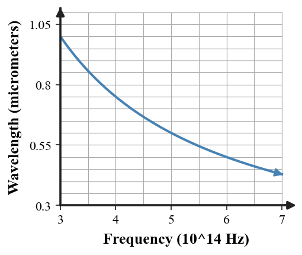
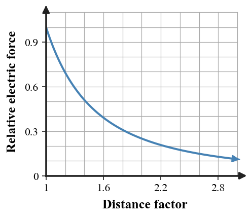
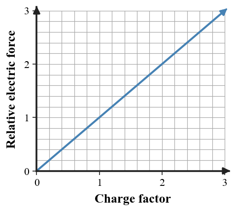
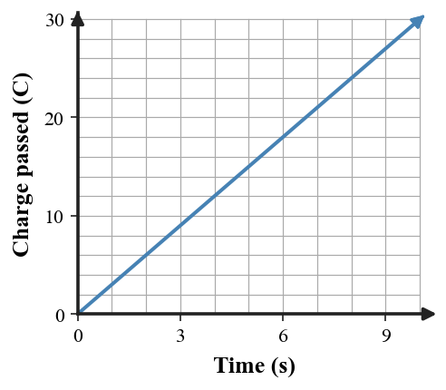
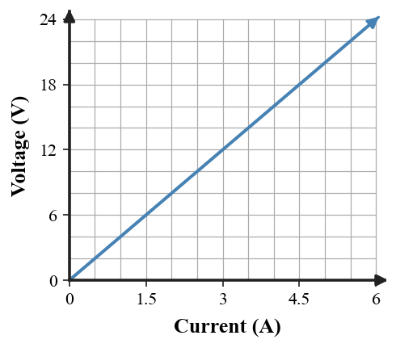
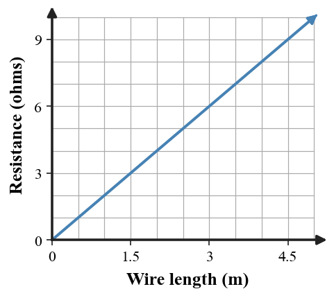
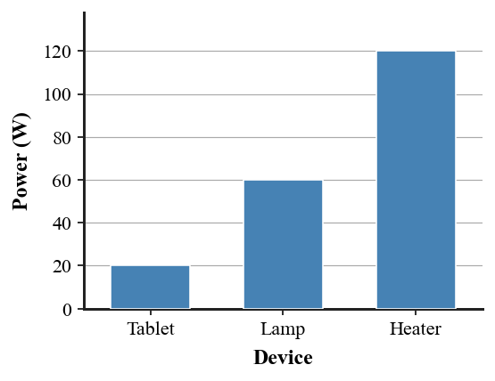
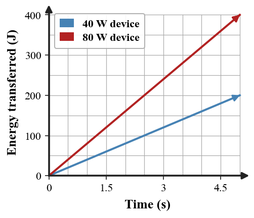
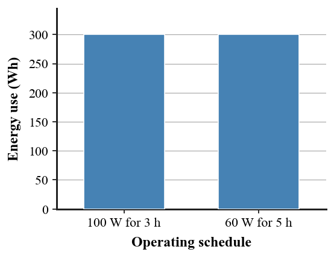

I am a six-letter word. Remove one letter and twelve remains. What word am I?
Use $C=2\pi r$ with $\pi=3.14$. A circular fountain has a circumference of $56.52\,\text{m}$. Determine its radius.
Which term means light bouncing from a surface?
A. Refraction
B. Reflection
C. Dispersion
D. Transmission
Use $n=\frac{c}{v}$ with $c=3.0\times10^8\,\text{m/s}$. Light travels through a clear material at $2.4\times10^8\,\text{m/s}$. Determine the material's index of refraction.
What familiar phrase is represented below?
D
O
W
N
TOWN
Determine the radius of a circular sign using $A=\pi r^2$. The sign has an area of $153.86\,\text{cm}^2$. Use $\pi=3.14$.
A material that allows light to pass through clearly is described as:
A. Opaque
B. Transparent
C. Reflective only
D. Absorbent

The graph models the relationship $c=f\lambda$ for light in vacuum. Use the graph to estimate the wavelength when the frequency is $5.0\times10^{14}\,\text{Hz}$, then verify with $c=3.0\times10^8\,\text{m/s}$.
A man was born in 1955 and died in 1955 at age 80. How can this be true?
A machine does $18{,}000\,\text{J}$ of work in $30\,\text{s}$. Determine its average power using $P=\frac{W}{t}$.
Which description best matches a virtual image?
A. An image that can always be projected onto a screen
B. An image formed where light rays actually meet
C. An image that appears to come from a location where rays do not actually meet
D. An image with no light involved
Use Snell's Law, $n_1\sin\theta_1=n_2\sin\theta_2$. Light travels from air $(n_1=1.00)$ into glass $(n_2=1.50)$ at $30^\circ$ from the normal. Determine the refracted angle to the nearest degree.
Six people each take one egg from a basket containing six eggs, yet one egg is still left in the basket. How is that possible?
Use $V=lwh$. A rectangular aquarium holds $0.36\,\text{m}^3$. It is $1.2\,\text{m}$ long and $0.50\,\text{m}$ wide. Determine its height.
Which pair of electric charges attracts?
A. Positive and positive
B. Negative and negative
C. Positive and negative
D. Two positive charges only when touching

Two charged objects exert a $12\,\text{N}$ electric force when separated by a distance $r$. The graph shows the inverse-square relationship. If the distance becomes $2r$ while both charges stay the same, determine the new force.
A short person lives on the 10th floor. Every morning they ride the elevator down. Coming home, they ride to the 7th floor and walk up three flights, except on rainy days when they ride all the way to the 10th. Why?
Determine the height reached by a $50\,\text{kg}$ climber with $4{,}500\,\text{J}$ of gravitational potential energy. Use $PE=mgh$ and $g=10\,\text{N/kg}$.
Charging an object without touching it is called charging by:
A. Friction
B. Contact
C. Induction
D. Resistance

The graph shows how electric force changes when one charge changes while distance and the other charge stay fixed. If the original force is $8\,\text{N}$ and one charge is doubled, determine the new force.
A round cake must be divided into 8 equal pieces using exactly 3 straight cuts. How can it be done?
A manufacturer needs the diameter of a circular pipe before ordering a fitted ring. The pipe's circumference is $94.2\,\text{cm}$. Use $C=\pi d$ with $\pi=3.14$ to determine the diameter.
Which material is most likely a good electrical conductor?
A. Copper wire
B. Rubber glove
C. Plastic ruler
D. Dry wood block
Use Coulomb's Law, $F=k\frac{|q_1q_2|}{r^2}$, with $k=9.0\times10^9\,\text{N}\cdot\text{m}^2/\text{C}^2$. Two charges of $2.0\times10^{-6}\,\text{C}$ and $3.0\times10^{-6}\,\text{C}$ are $0.30\,\text{m}$ apart. Determine the magnitude of the electric force.
During one 12-hour period, how many times do the hour hand and minute hand of a clock exactly overlap?
A wire carries $24\,\text{C}$ of charge past a point in $6\,\text{s}$. Use $I=\frac{Q}{t}$ to determine the current.
Voltage is best described as:
A. Charge passing a point each second
B. Energy per charge
C. Opposition to charge flow
D. The number of electrons in a wire

The graph shows the amount of charge that passes a point in a wire. Use $I=\frac{Q}{t}$ to determine the current represented by the graph.
I have branches, but no fruit, trunk, or leaves. What am I?
Determine how much energy is transferred when a $12\,\text{V}$ source moves $5\,\text{C}$ of charge. Use $V=\frac{E}{q}$.
A sustained electric current in a simple circuit requires:
A. A voltage source and a complete conducting path
B. Only a resistor
C. An open switch
D. A charged object with no path
A charging cable passes $30\,\text{C}$ of charge in $10\,\text{s}$ and then continues at the same steady current. Use $I=\frac{Q}{t}$ to determine how much total charge will pass in $45\,\text{s}$.
A rope ladder hangs over the side of a boat. The bottom rung is just above the water. The tide rises 1 meter. How many additional rungs are underwater?
Use $KE=\frac12mv^2$. Determine the mass of an object with $900\,\text{J}$ of kinetic energy moving at $15\,\text{m/s}$.
Electric current is the:
A. Energy stored in a battery
B. Rate of charge flow
C. Opposition to charge flow
D. Force between two charges
A battery transfers $72\,\text{J}$ of energy while moving $6\,\text{C}$ of charge through a circuit. Use $V=\frac{E}{q}$ to determine the battery's voltage.
Three consecutive whole numbers have a sum of 72. What are the three numbers?
A $6\,\Omega$ resistor is connected across an $18\,\text{V}$ source. Use $V=IR$ to determine the current.
Electrical resistance is best described as:
A. Opposition to charge flow
B. Energy per charge
C. Charge per second
D. Electric force between charges

The graph shows voltage versus current for a resistor. Use $V=IR$ and the graph to determine the resistance.
A truck driver goes the wrong way down a one-way street. A police officer sees the driver but does not stop them. Why?
Determine the resistance of a device that draws $0.80\,\text{A}$ when connected to $24\,\text{V}$. Use $V=IR$.
For a resistor whose resistance stays constant, what happens to current when voltage increases?
A. Current increases
B. Current decreases
C. Current becomes zero
D. Current is unrelated to voltage
A resistor carries $0.50\,\text{A}$ when $6.0\,\text{V}$ is applied. The same resistor is then connected to $18\,\text{V}$. Use $V=IR$ to determine the new current.
A person walks through heavy rain with no hat or umbrella. Their clothes are soaked, but not a single hair on their head gets wet. How?
Use $Q=mc\Delta T$. A $2.0\,\text{kg}$ sample absorbs $8{,}400\,\text{J}$ while warming by $2.0^\circ\text{C}$. Determine its specific heat capacity.

The graph compares wires of the same material and thickness. Which change increases resistance?
A. Making the wire longer
B. Making the wire shorter
C. Removing the wire
D. Length has no relationship to resistance
A small lamp has a resistance of $3.0\,\Omega$ and is connected to a $9.0\,\text{V}$ source. Use $V=IR$ to determine the current.
A person falls off a 20-foot ladder but is not hurt. How is that possible?
A laptop charger provides $20\,\text{V}$ and delivers $3.25\,\text{A}$. Use $P=IV$ to determine its electric power.

The graph compares three device power ratings. Which device transfers electrical energy at the greatest rate?
A. Tablet
B. Lamp
C. Heater
D. All transfer energy at the same rate
A $75\,\text{W}$ lamp operates for $40\,\text{s}$. Use $E=Pt$ to determine the electrical energy transferred.
A word is shown in this order:
DEATH LIFE
What familiar phrase does it represent?
Determine how long a $60\,\text{W}$ device must operate to transfer $1{,}200\,\text{J}$ of electrical energy. Use $E=Pt$.
Two devices operate for the same amount of time. The higher-power device generally transfers:
A. More energy
B. Less energy
C. No energy
D. The same energy regardless of power

A charger operates at $12\,\text{V}$ and $2.0\,\text{A}$ for $300\,\text{s}$. Use $P=IV$ and then $E=Pt$ to determine the total electrical energy transferred.
A rooster sits on the peak of a barn roof and lays an egg. Which side of the roof does the egg roll down?
A $1.5\,\text{kW}$ space heater runs for $4.0\,\text{h}$. Electricity costs $\$0.18$ per kWh. Use $\text{Cost}=(\text{power})(\text{time})(\text{rate})$ to determine the operating cost.
Electrical energy use depends directly on:
A. Power only
B. Time only
C. Both power and operating time
D. Resistance only

The graph compares two operating schedules. Use $E=Pt$ to verify which schedule uses more electrical energy: a $100\,\text{W}$ device for $3\,\text{h}$ or a $60\,\text{W}$ device for $5\,\text{h}$.
7.1 - Day 1
P1: DOZENS. Remove the final S and DOZEN remains, which means twelve.
P2: $r=\frac{C}{2\pi}=\frac{56.52}{6.28}=9.0\,\text{m}$.
P3: B - reflection.
P4: $n=\frac{3.0\times10^8}{2.4\times10^8}=1.25$.
7.1 - Day 2
P1: Downtown.
P2: $r=\sqrt{\frac{A}{\pi}}=\sqrt{49}=7.0\,\text{cm}$.
P3: B - transparent.
P4: About $0.60\,\mu\text{m}=6.0\times10^{-7}\,\text{m}$. Calculation: $\lambda=c/f=6.0\times10^{-7}\,\text{m}$.
7.1 - Day 3
P1: 1955 is not the year; it can be a room number, address, or another identifier.
P2: $P=18{,}000/30=600\,\text{W}$.
P3: C - a virtual image appears to come from a location where rays do not actually meet.
P4: $\sin\theta_2=(1.00/1.50)\sin30^\circ=0.333$, so $\theta_2\approx19^\circ$.
7.2 - Day 1
P1: The sixth person takes the basket with the last egg still inside it.
P2: $h=\frac{V}{lw}=\frac{0.36}{(1.2)(0.50)}=0.60\,\text{m}$.
P3: C - opposite charges attract.
P4: Doubling distance makes the force $1/2^2=1/4$ as large: $12/4=3.0\,\text{N}$.
7.2 - Day 2
P1: They can reach the 7th-floor button but not the 10th-floor button. On rainy days, an umbrella lets them reach the higher button.
P2: $h=\frac{PE}{mg}=\frac{4500}{(50)(10)}=9.0\,\text{m}$.
P3: C - induction.
P4: Doubling one charge doubles the force: $16\,\text{N}$.
7.2 - Day 3
P1: Make two perpendicular vertical cuts through the center to create four equal quarters, then make one horizontal cut through the middle of the cake to double the four pieces into eight.
P2: $d=C/\pi=94.2/3.14=30.0\,\text{cm}$.
P3: A - copper wire.
P4: $F=(9.0\times10^9)(2.0\times10^{-6})(3.0\times10^{-6})/(0.30)^2=0.60\,\text{N}$.
7.3 - Day 1
P1: 11 times.
P2: $I=24/6=4.0\,\text{A}$.
P3: B - voltage is electric potential difference, or energy per charge.
P4: Using any point, for example $Q=30\,\text{C}$ at $t=10\,\text{s}$: $I=30/10=3.0\,\text{A}$.
7.3 - Day 2
P1: A bank.
P2: $E=Vq=(12)(5)=60\,\text{J}$.
P3: A - a voltage source and a complete conducting path.
P4: Intermediate: $I=30/10=3\,\text{A}$. Final: $Q=It=(3)(45)=135\,\text{C}$.
7.3 - Day 3
P1: None. The boat rises with the tide, so the ladder rises too.
P2: $m=\frac{2KE}{v^2}=\frac{1800}{225}=8.0\,\text{kg}$.
P3: B - current is the rate of charge flow.
P4: $V=72/6=12\,\text{V}$.
7.4 - Day 1
P1: 23, 24, and 25. They are consecutive and $23+24+25=72$.
P2: $I=V/R=18/6=3.0\,\text{A}$.
P3: A - resistance is opposition to charge flow.
P4: $R=V/I$. For example, $20\,\text{V}/5\,\text{A}=4.0\,\Omega$. The graph's slope is $4\,\Omega$.
7.4 - Day 2
P1: The truck driver is walking, not driving the truck.
P2: $R=V/I=24/0.80=30\,\Omega$.
P3: A - current increases when voltage increases at constant resistance.
P4: Intermediate: $R=6.0/0.50=12\,\Omega$. Final: $I=18/12=1.5\,\text{A}$.
7.4 - Day 3
P1: The person is bald.
P2: $c=Q/(m\Delta T)=8400/(2.0\cdot2.0)=2100\,\text{J/(kg}\cdot^\circ\text{C)}$.
P3: A - making the wire longer increases resistance in this model.
P4: $I=9.0/3.0=3.0\,\text{A}$.
7.5 - Day 1
P1: They fell from the bottom rung (or from a very low rung), not from the top.
P2: $P=(3.25)(20)=65\,\text{W}$.
P3: C - the heater has the greatest power rating, so it transfers energy at the greatest rate.
P4: $E=(75)(40)=3000\,\text{J}$.
7.5 - Day 2
P1: Life after death.
P2: $t=E/P=1200/60=20\,\text{s}$.
P3: A - for equal time, greater power means more energy transferred.
P4: Intermediate: $P=(12)(2.0)=24\,\text{W}$. Final: $E=(24)(300)=7200\,\text{J}$.
7.5 - Day 3
P1: Neither side. Roosters do not lay eggs.
P2: Energy use $=(1.5)(4.0)=6.0\,\text{kWh}$. Cost $=(6.0)(\$0.18)=\$1.08$.
P3: C - $E=Pt$, so both power and time matter.
P4: They use the same energy: $(100)(3)=300\,\text{Wh}$ and $(60)(5)=300\,\text{Wh}$.